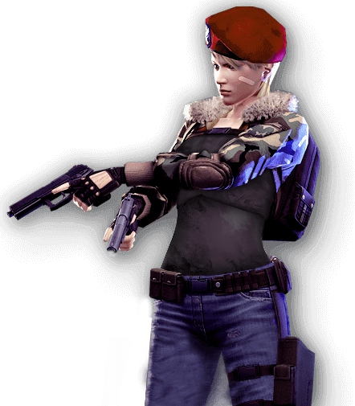

Tarantula lost her parents at an early age and was moved into a corporate schooling and orphanage facility. After being adopted by a wealthy business tycoon she was given a comfortable home and a life at an excellent school. However, when her adoptive parents soon had a child of their own, they began to neglect and mistreat Tarantula.
When she could take it no more, she took the revolver her father kept in his study and urdered both of them.